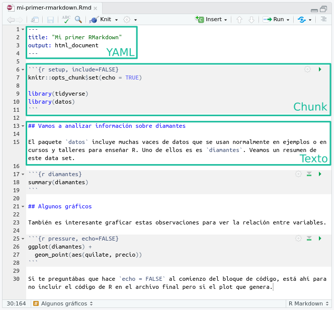

Es posible que en tu trabajo tengas que presentar informes o resultados de tu análisis de datos. Tal vez te hayas encontrando guardando una y otra vez gráficos y tablas o copiando resultados de un archivo al otro hasta que el informe quedó como querías. Los archivos y el paquete RMarkdown vienen al rescate.
Un archivo RMarkdown a diferencia de un script .R permite incluir código en bloques o chunks y texto plano o con formato simple de leer usando markdown. A poder intercalar cálculos y gráficos con su análisis o explicación, se unifica el flujo de trabajo y deja de ser necesario guardar figuras o tablas para luego insertarlas en un documento de texto. Esto es muy importante si buscamos que nuestro trabajo sea reproducible, pero además ahorra tiempo.
Aún si nunca necesitaras presentar un informe, trabajar con archivos de este tipo te permite volcar todo tu trabajo en un solo lugar y te asegura que cundo vuelvas a revisar mañana o el año que viene, tendrás el código y tus ideas organizadas.
Creando archivos .Rmd
Para crear un nuevo archivo de R Markdown usá el menú desplegable de RStudio:
File → New File → R Markdown
Y se abrirá un menú donde podés agregar el título y tu nombre. Por ahora vamos a usar el formato html como salida, charlaremos de las distintas posibilidades que ofrece más adelante.

Al aceptar, se abrirá un nuevo archivo pero que no está vacío. RStudio ofrece una plantilla a partir de la cual empezar a trabajar.
Primer desafío: Crea un nuevo archivo R Markdown
Revisá la plantilla que trae el documento. ¿Podés identificar los bloques de código?
Para generar el archivo de salida el paquete knitr (que viene de tejer en inglés) y algunos otros ejecutará el código en una sesión independiente de R e interpretará el texto, su formato y cualquier otra cosa que agreguemos (por ejemplo imágenes o links externos). Esto significa que nuestro archivo debe tener todo lo necesario para generar el análisis y si nos olvidamos de algo va a dar error.
Por esta razón es recomendable knitear el archivo seguido, para encontrarnos con los errores a tiempo y de paso asegurarnos que el análisis es reproducible.
Segundo desafío: “knitea” tu R Markdown
Aprovechando la plantilla de RStudio, obtené el archivo de salida en formato html haciendo click en el botón knit (el que tiene un ovillo de lana y un par de agujas!)
Estructura de un .Rmd
Cualquier archivo de este tipo tiene 3 partes principales:
- El encabezado o yaml que determina que pinta tendrá el archivo de salida, por ejemplo en formato html. También se puede incluir información sobre el autor, la fecha, si queremos o no una tabla de contenidos y muchas cosas más.
- El texto o textos ya que puede estar a lo largo de todo el documento. Para darle formato a los títulos o por ejemplo resaltar parte del texto usando negrita se usa
Markdown, un lenguaje que a diferencia de html es legible aún si no está compilado o en su versión final.
- El código en bloques o
chuncks. Dentro de un chunk el código de R puede ejecutarse al igual que en un script normal y cualquier comentario o explicación debe tener al principio un # para que R lo interprete correctamente.

Podés encontrar este archivo de ejemplo acá.
Al agregar nuevas opciones en el YAML, se crean jerarquías que se identifican escalonando (o indentando) los renglones. Por ejemplo:
---
title: "Mi primer RMarkdown"
output:
html_document:
code_download: true
toc: true
toc_float: false
---
Es muy importante que no modifiques esto ya que de otra forma al hacer knit dará error.
Markdown
Markdown permite escribir una página web al igual que html pero de manera simple de leer. Si nuestro archivo de salida es un html, luego el paquete knitr se encargará de reemplazar las marcas de markdown por el código de html correspondiente. Pero como dijimos más arriba también será posible generar otro tipo de archivos de salida.
Por ejemplo podrás resaltar con negrita usando dos asteriscos así: **negrita** o italizada con un asterisco de cada lado: *italics*.
También podés hacer una lista de elementos utilizando asteriscos:
* la negrita se consigue con dos asteriscos
* la italizada con un asterisco
* y para resaltar código se usa el acento grave `
o guiones medios:
- la negrita se consigue con dos asteriscos
- la italizada con un asterisco
- y para resaltar código se usa el acento grave `
Ambas listas van a tener esta pita:
- la negrita se consigue con dos asteriscos
- la italizada con un asterisco
- y para resaltar código se usa el acento grave `
Si en realidad querés una lista numerada, simplemente comenzá el renglón un número y un punto. Podrías usar siempre el mismo número, markdown se encarga del resto:
1. la negrita se consigue con dos asteriscos
1. la italizada con un asterisco
1. y para resaltar código se usa el acento grave `
Ahora la lista numerada se ve así:
- la negrita se consigue con dos asteriscos
- la italizada con un asterisco
- y para resaltar código se usa el acento grave `
Podés agregar títulos con distinta jerarquía agregando # al comienzo. Esto además define secciones dentro del documento:
# Título
## El primer subtítulo
### Otro subtítulo de menor jerarquía
#### Otro más, y podría seguir!
Tercer desafío: Agregale texto a tu archivo
Borrá el contenido del archivo .Rmd que creaste (pero no el encabezado!) y probá escribir algo y darle formato. Luego volvé a apretar el botón knit para ver el resultado.
Markdown permite muchas otras cosas, por ejemplo:
Podés agregar un link a una página externa: [text to show](http://the-web-page.com).
Podés incluir una imagen: 
Y también podés agregar ecuaciones en LaTeX en la misma línea (esto:$E = mc^2$ se ve así: \(E = mc^2\)) o en una línea propia. Esto:
$$
y = \mu + \sum_{i=1}^p \beta_i x_i + \epsilon
$$
se ve así:
\[
y = \mu + \sum_{i=1}^p \beta_i x_i + \epsilon
\]
Podés revisar la guía rápida de Markdown desde RStudio (en inglés):
Help → Markdown Quick Reference
Bloques de código
Los bloques de código o chunks se definen usando 3 acentos grave al principio y al final:
```{r nombre-del-chunk}
```
Y se diferencia del resto de archivo con un fondo gris.
Para insertar un nuevo chunk podés:
- Usar el botón Insert
- El atajo de teclado Ctrl+Alt+I
- Escribir a mano!
Como viste en el ejemplo, los chucks pueden tener nombre y esto es útil para identificar donde ocurren los errores al momento de knitear pero también para tener una pista de lo que hace el código que incluye.
Todo lo que incluyas entre los acentos graves será interpretado por R como código e intentará ejecutarlo al knitear el archivo. Pero también podemos correr el código interactivamente como en la consola, con la diferencia de que ahora el resultado (ya sea un valor, un gráfico o cualquier otra cosa) aparecerá inmediatamente por debajo del bloque de código. Para correr una línea de código, tendrás que pararte sobre esa línea y apretar:
Pero también podés correr el código de todo el chunk con:
Cuarto desafío: Sumá un chunk a tu archivo
Usando el archivo con el que venís trabajando insertá un nuevo chunk y:
- Cargá el paquete {readr}.
- Creá una variable que se llame
variable-prueba y asignale un valor.
- Mostrá ese valor.
- Volvé a knitear el archivo para ver el resultado
Texto en línea
Finalmente es posible que te encuentres mencionando resultados en el texto, por ejemplo algo así como “la media de temperatura mínima para el mes de marzo fue de 18 grados”. Y también es posible que ese valor cambie si utilizas una base de datos distinta o si luego generas un informe pero para un mes siguiente. Las chances de de que te olvides de actualizar ese “18” son super altas, por eso RMarkdown también tiene la posibilidad de incorporar texto en línea.
Imaginemos que tenés una variables temperatura a la cual le asignamos el valor “18”:
Para mencionarla en el texto entonces tenemos que poner el nombre de esa variable entre dos acentos graves y avisar que se trata de código de R des esta manera `r temperatura`. Entonces si en algún momento cambia el valor de la variable, la próxima vez que knites el documento se actualizará en el texto.
LS0tCnRpdGxlOiAiSW50cm9kdWNjacOzbiBhIHtSTWFya2Rvd259IgpvdXRwdXQ6IAogIGh0bWxfZG9jdW1lbnQ6CiAgICBjb2RlX2Rvd25sb2FkOiB0cnVlCiAgICB0b2M6IHRydWUKICAgIHRvY19mbG9hdDogZmFsc2UKICAgIGhpZ2hsaWdodDogdGFuZ28KLS0tCgpgYGB7ciBzZXR1cCwgaW5jbHVkZT1GQUxTRX0Ka25pdHI6Om9wdHNfY2h1bmskc2V0KGVjaG8gPSBUUlVFKQpgYGAKCkVzIHBvc2libGUgcXVlIGVuIHR1IHRyYWJham8gdGVuZ2FzIHF1ZSBwcmVzZW50YXIgaW5mb3JtZXMgbyByZXN1bHRhZG9zIGRlIHR1IGFuw6FsaXNpcyBkZSBkYXRvcy4gVGFsIHZleiB0ZSBoYXlhcyBlbmNvbnRyYW5kbyBndWFyZGFuZG8gdW5hIHkgb3RyYSB2ZXogZ3LDoWZpY29zIHkgdGFibGFzIG8gY29waWFuZG8gcmVzdWx0YWRvcyBkZSB1biBhcmNoaXZvIGFsIG90cm8gaGFzdGEgcXVlIGVsIGluZm9ybWUgcXVlZMOzIGNvbW8gcXVlcsOtYXMuIExvcyBhcmNoaXZvcyB5IGVsIHBhcXVldGUgYFJNYXJrZG93bmAgdmllbmVuIGFsIHJlc2NhdGUuIAoKVW4gYXJjaGl2byBgUk1hcmtkb3duYCBhIGRpZmVyZW5jaWEgZGUgdW4gc2NyaXB0IGAuUmAgcGVybWl0ZSBpbmNsdWlyIGPDs2RpZ28gZW4gYmxvcXVlcyBvICpjaHVua3MqIHkgdGV4dG8gcGxhbm8gbyBjb24gZm9ybWF0byBzaW1wbGUgZGUgbGVlciB1c2FuZG8gW21hcmtkb3duXShodHRwczovL21hcmtkb3duLmVzL3NpbnRheGlzLW1hcmtkb3duLykuIEEgcG9kZXIgaW50ZXJjYWxhciBjw6FsY3Vsb3MgeSBncsOhZmljb3MgY29uIHN1IGFuw6FsaXNpcyBvIGV4cGxpY2FjacOzbiwgc2UgdW5pZmljYSBlbCBmbHVqbyBkZSB0cmFiYWpvIHkgZGVqYSBkZSBzZXIgbmVjZXNhcmlvIGd1YXJkYXIgZmlndXJhcyBvIHRhYmxhcyBwYXJhIGx1ZWdvIGluc2VydGFybGFzIGVuIHVuIGRvY3VtZW50byBkZSB0ZXh0by4gRXN0byBlcyBtdXkgaW1wb3J0YW50ZSBzaSBidXNjYW1vcyBxdWUgbnVlc3RybyB0cmFiYWpvIHNlYSByZXByb2R1Y2libGUsIHBlcm8gYWRlbcOhcyBhaG9ycmEgdGllbXBvLiAKCkHDum4gc2kgbnVuY2EgbmVjZXNpdGFyYXMgcHJlc2VudGFyIHVuIGluZm9ybWUsIHRyYWJhamFyIGNvbiBhcmNoaXZvcyBkZSBlc3RlIHRpcG8gdGUgcGVybWl0ZSB2b2xjYXIgdG9kbyB0dSB0cmFiYWpvIGVuIHVuIHNvbG8gbHVnYXIgeSB0ZSBhc2VndXJhIHF1ZSBjdW5kbyB2dWVsdmFzIGEgcmV2aXNhciBtYcOxYW5hIG8gZWwgYcOxbyBxdWUgdmllbmUsIHRlbmRyw6FzIGVsIGPDs2RpZ28geSB0dXMgaWRlYXMgb3JnYW5pemFkYXMuCgojIyMgQ3JlYW5kbyBhcmNoaXZvcyAuUm1kCgpQYXJhIGNyZWFyIHVuIG51ZXZvIGFyY2hpdm8gZGUgUiBNYXJrZG93biB1c8OhIGVsIG1lbsO6IGRlc3BsZWdhYmxlIGRlIFJTdHVkaW86Cgo6Ojogey5hbGVydCAuYWxlcnQtc2Vjb25kYXJ5fQpGaWxlIOKGkiBOZXcgRmlsZSDihpIgUiBNYXJrZG93bgo6OjoKClkgc2UgYWJyaXLDoSB1biBtZW7DuiBkb25kZSBwb2TDqXMgYWdyZWdhciBlbCB0w610dWxvIHkgdHUgbm9tYnJlLiBQb3IgYWhvcmEgdmFtb3MgYSB1c2FyIGVsIGZvcm1hdG8gaHRtbCBjb21vIHNhbGlkYSwgY2hhcmxhcmVtb3MgZGUgbGFzIGRpc3RpbnRhcyBwb3NpYmlsaWRhZGVzIHF1ZSBvZnJlY2UgbcOhcyBhZGVsYW50ZS4gCgohW10oaW1nL251ZXZvLXJtZC5wbmcpCgpBbCBhY2VwdGFyLCBzZSBhYnJpcsOhIHVuIG51ZXZvIGFyY2hpdm8gcGVybyBxdWUgbm8gZXN0w6EgdmFjw61vLiBSU3R1ZGlvIG9mcmVjZSB1bmEgcGxhbnRpbGxhIGEgcGFydGlyIGRlIGxhIGN1YWwgZW1wZXphciBhIHRyYWJhamFyLiAKCjo6OiB7LmFsZXJ0IC5hbGVydC1pbmZvfQoqKlByaW1lciBkZXNhZsOtbzogQ3JlYSB1biBudWV2byBhcmNoaXZvIFIgTWFya2Rvd24qKgoKUmV2aXPDoSBsYSBwbGFudGlsbGEgcXVlIHRyYWUgZWwgZG9jdW1lbnRvLiDCv1BvZMOpcyBpZGVudGlmaWNhciBsb3MgYmxvcXVlcyBkZSBjw7NkaWdvPwo6OjoKClBhcmEgZ2VuZXJhciBlbCBhcmNoaXZvIGRlIHNhbGlkYSBlbCBwYXF1ZXRlIGBrbml0cmAgKHF1ZSB2aWVuZSBkZSAqdGVqZXIqIGVuIGluZ2zDqXMpIHkgYWxndW5vcyBvdHJvcyBlamVjdXRhcsOhIGVsIGPDs2RpZ28gZW4gdW5hIHNlc2nDs24gaW5kZXBlbmRpZW50ZSBkZSBSIGUgaW50ZXJwcmV0YXLDoSBlbCB0ZXh0bywgc3UgZm9ybWF0byB5IGN1YWxxdWllciBvdHJhIGNvc2EgcXVlIGFncmVndWVtb3MgKHBvciBlamVtcGxvIGltw6FnZW5lcyBvIGxpbmtzIGV4dGVybm9zKS4gRXN0byBzaWduaWZpY2EgcXVlIG51ZXN0cm8gYXJjaGl2byBkZWJlIHRlbmVyICoqdG9kbyoqIGxvIG5lY2VzYXJpbyBwYXJhIGdlbmVyYXIgZWwgYW7DoWxpc2lzIHkgc2kgbm9zIG9sdmlkYW1vcyBkZSBhbGdvIHZhIGEgZGFyIGVycm9yLiAKClBvciBlc3RhIHJhesOzbiBlcyByZWNvbWVuZGFibGUgKmtuaXRlYXIqIGVsIGFyY2hpdm8gc2VndWlkbywgcGFyYSBlbmNvbnRyYXJub3MgY29uIGxvcyBlcnJvcmVzIGEgdGllbXBvIHkgZGUgcGFzbyBhc2VndXJhcm5vcyBxdWUgZWwgYW7DoWxpc2lzIGVzIHJlcHJvZHVjaWJsZS4gCgo6Ojogey5hbGVydCAuYWxlcnQtaW5mb30KKipTZWd1bmRvIGRlc2Fmw61vOiAia25pdGVhIiB0dSBSIE1hcmtkb3duKioKCkFwcm92ZWNoYW5kbyBsYSBwbGFudGlsbGEgZGUgUlN0dWRpbywgb2J0ZW7DqSBlbCBhcmNoaXZvIGRlIHNhbGlkYSBlbiBmb3JtYXRvIGh0bWwgaGFjaWVuZG8gY2xpY2sgZW4gZWwgYm90w7NuICoqa25pdCoqIChlbCBxdWUgdGllbmUgdW4gb3ZpbGxvIGRlIGxhbmEgeSB1biBwYXIgZGUgYWd1amFzISkKOjo6CgojIyMgRXN0cnVjdHVyYSBkZSB1biAuUm1kCgpDdWFscXVpZXIgYXJjaGl2byBkZSBlc3RlIHRpcG8gdGllbmUgMyBwYXJ0ZXMgcHJpbmNpcGFsZXM6CgotICBFbCBlbmNhYmV6YWRvIG8gKnlhbWwqIHF1ZSBkZXRlcm1pbmEgcXVlIHBpbnRhIHRlbmRyw6EgZWwgYXJjaGl2byBkZSBzYWxpZGEsIHBvciBlamVtcGxvIGVuIGZvcm1hdG8gaHRtbC4gVGFtYmnDqW4gc2UgcHVlZGUgaW5jbHVpciBpbmZvcm1hY2nDs24gc29icmUgZWwgYXV0b3IsIGxhIGZlY2hhLCBzaSBxdWVyZW1vcyBvIG5vIHVuYSB0YWJsYSBkZSBjb250ZW5pZG9zIHkgbXVjaGFzIGNvc2FzIG3DoXMuIAotIEVsIHRleHRvIG8gdGV4dG9zIHlhIHF1ZSBwdWVkZSBlc3RhciBhIGxvIGxhcmdvIGRlIHRvZG8gZWwgZG9jdW1lbnRvLiBQYXJhIGRhcmxlIGZvcm1hdG8gYSBsb3MgdMOtdHVsb3MgbyBwb3IgZWplbXBsbyByZXNhbHRhciBwYXJ0ZSBkZWwgdGV4dG8gdXNhbmRvIG5lZ3JpdGEgc2UgdXNhIGBNYXJrZG93bmAsIHVuICpsZW5ndWFqZSogcXVlIGEgZGlmZXJlbmNpYSBkZSBodG1sIGVzIGxlZ2libGUgYcO6biBzaSBubyBlc3TDoSBjb21waWxhZG8gbyBlbiBzdSB2ZXJzacOzbiBmaW5hbC4gCi0gRWwgY8OzZGlnbyBlbiBibG9xdWVzIG8gYGNodW5ja3NgLiBEZW50cm8gZGUgdW4gY2h1bmsgZWwgY8OzZGlnbyBkZSBSIHB1ZWRlIGVqZWN1dGFyc2UgYWwgaWd1YWwgcXVlIGVuIHVuIHNjcmlwdCBub3JtYWwgeSBjdWFscXVpZXIgY29tZW50YXJpbyBvIGV4cGxpY2FjacOzbiBkZWJlIHRlbmVyIGFsIHByaW5jaXBpbyB1biBgI2AgcGFyYSBxdWUgUiBsbyBpbnRlcnByZXRlIGNvcnJlY3RhbWVudGUuIAoKIVtdKGltZy9ybWQtZWplbXBsby1zZWNjaW9uZXMucG5nKQoKUG9kw6lzIGVuY29udHJhciBlc3RlIGFyY2hpdm8gZGUgZWplbXBsbyBbYWPDoV0oZmlsZXMvbWktcHJpbWVyLXJtYXJrZG93bi5SbWQpLgoKOjo6IHsuYWxlcnQgLmFsZXJ0LXN1Y2Nlc3N9CkFsIGFncmVnYXIgbnVldmFzIG9wY2lvbmVzIGVuIGVsIFlBTUwsIHNlIGNyZWFuIGplcmFycXXDrWFzIHF1ZSBzZSBpZGVudGlmaWNhbiBlc2NhbG9uYW5kbyAobyAqaW5kZW50YW5kbyopIGxvcyByZW5nbG9uZXMuIFBvciBlamVtcGxvOgoKYGBgeWFtbAotLS0KdGl0bGU6ICJNaSBwcmltZXIgUk1hcmtkb3duIgpvdXRwdXQ6IAogIGh0bWxfZG9jdW1lbnQ6CiAgICBjb2RlX2Rvd25sb2FkOiB0cnVlCiAgICB0b2M6IHRydWUKICAgIHRvY19mbG9hdDogZmFsc2UKLS0tCmBgYApFcyBtdXkgaW1wb3J0YW50ZSBxdWUgbm8gbW9kaWZpcXVlcyBlc3RvIHlhIHF1ZSBkZSBvdHJhIGZvcm1hIGFsIGhhY2VyIGBrbml0YCBkYXLDoSBlcnJvci4KOjo6CgojIyMgTWFya2Rvd24KCk1hcmtkb3duIHBlcm1pdGUgZXNjcmliaXIgdW5hIHDDoWdpbmEgd2ViIGFsIGlndWFsIHF1ZSBodG1sIHBlcm8gZGUgbWFuZXJhIHNpbXBsZSBkZSBsZWVyLiBTaSBudWVzdHJvIGFyY2hpdm8gZGUgc2FsaWRhIGVzIHVuIGh0bWwsIGx1ZWdvIGVsIHBhcXVldGUgYGtuaXRyYCBzZSBlbmNhcmdhcsOhIGRlIHJlZW1wbGF6YXIgbGFzIG1hcmNhcyBkZSBtYXJrZG93biBwb3IgZWwgY8OzZGlnbyBkZSBodG1sIGNvcnJlc3BvbmRpZW50ZS4gUGVybyBjb21vIGRpamltb3MgbcOhcyBhcnJpYmEgdGFtYmnDqW4gc2Vyw6EgcG9zaWJsZSBnZW5lcmFyIG90cm8gdGlwbyBkZSBhcmNoaXZvcyBkZSBzYWxpZGEuIAoKUG9yIGVqZW1wbG8gcG9kcsOhcyByZXNhbHRhciBjb24gKipuZWdyaXRhKiogdXNhbmRvIGRvcyBhc3RlcmlzY29zIGFzw606IGAqKm5lZ3JpdGEqKmAgbyAqaXRhbGl6YWRhKiBjb24gdW4gYXN0ZXJpc2NvIGRlIGNhZGEgbGFkbzogYCppdGFsaWNzKmAuCgpUYW1iacOpbiBwb2TDqXMgaGFjZXIgdW5hIGxpc3RhIGRlIGVsZW1lbnRvcyB1dGlsaXphbmRvIGFzdGVyaXNjb3M6CgpgYGAKKiBsYSBuZWdyaXRhIHNlIGNvbnNpZ3VlIGNvbiBkb3MgYXN0ZXJpc2NvcwoqIGxhIGl0YWxpemFkYSBjb24gdW4gYXN0ZXJpc2NvCiogeSBwYXJhIHJlc2FsdGFyIGPDs2RpZ28gc2UgdXNhIGVsIGFjZW50byBncmF2ZSBgCmBgYAoKbyBndWlvbmVzIG1lZGlvczoKCmBgYAotIGxhIG5lZ3JpdGEgc2UgY29uc2lndWUgY29uIGRvcyBhc3RlcmlzY29zCi0gbGEgaXRhbGl6YWRhIGNvbiB1biBhc3RlcmlzY28KLSB5IHBhcmEgcmVzYWx0YXIgY8OzZGlnbyBzZSB1c2EgZWwgYWNlbnRvIGdyYXZlIGAKYGBgCkFtYmFzIGxpc3RhcyB2YW4gYSB0ZW5lciBlc3RhIHBpdGE6CgotIGxhIG5lZ3JpdGEgc2UgY29uc2lndWUgY29uIGRvcyBhc3RlcmlzY29zCi0gbGEgaXRhbGl6YWRhIGNvbiB1biBhc3RlcmlzY28KLSB5IHBhcmEgcmVzYWx0YXIgY8OzZGlnbyBzZSB1c2EgZWwgYWNlbnRvIGdyYXZlIGAKClNpIGVuIHJlYWxpZGFkIHF1ZXLDqXMgdW5hIGxpc3RhIG51bWVyYWRhLCBzaW1wbGVtZW50ZSBjb21lbnrDoSBlbCByZW5nbMOzbiB1biBuw7ptZXJvIHkgdW4gcHVudG8uIFBvZHLDrWFzIHVzYXIgc2llbXByZSBlbCBtaXNtbyBuw7ptZXJvLCBtYXJrZG93biBzZSBlbmNhcmdhIGRlbCByZXN0bzoKCmBgYAoxLiBsYSBuZWdyaXRhIHNlIGNvbnNpZ3VlIGNvbiBkb3MgYXN0ZXJpc2NvcwoxLiBsYSBpdGFsaXphZGEgY29uIHVuIGFzdGVyaXNjbwoxLiB5IHBhcmEgcmVzYWx0YXIgY8OzZGlnbyBzZSB1c2EgZWwgYWNlbnRvIGdyYXZlIGAKYGBgCgpBaG9yYSBsYSBsaXN0YSBudW1lcmFkYSBzZSB2ZSBhc8OtOgoKMS4gbGEgbmVncml0YSBzZSBjb25zaWd1ZSBjb24gZG9zIGFzdGVyaXNjb3MKMS4gbGEgaXRhbGl6YWRhIGNvbiB1biBhc3RlcmlzY28KMS4geSBwYXJhIHJlc2FsdGFyIGPDs2RpZ28gc2UgdXNhIGVsIGFjZW50byBncmF2ZSBgCgpQb2TDqXMgYWdyZWdhciB0w610dWxvcyBjb24gZGlzdGludGEgamVyYXJxdcOtYSBhZ3JlZ2FuZG8gYCNgIGFsIGNvbWllbnpvLiBFc3RvIGFkZW3DoXMgZGVmaW5lIHNlY2Npb25lcyBkZW50cm8gZGVsIGRvY3VtZW50bzoKCmBgYAojIFTDrXR1bG8KIyMgRWwgcHJpbWVyIHN1YnTDrXR1bG8KIyMjIE90cm8gc3VidMOtdHVsbyBkZSBtZW5vciBqZXJhcnF1w61hCiMjIyMgT3RybyBtw6FzLCB5IHBvZHLDrWEgc2VndWlyIQpgYGAKCjo6OiB7LmFsZXJ0IC5hbGVydC1pbmZvfQoqKlRlcmNlciBkZXNhZsOtbzogQWdyZWdhbGUgdGV4dG8gYSB0dSBhcmNoaXZvKioKCkJvcnLDoSBlbCBjb250ZW5pZG8gZGVsIGFyY2hpdm8gYC5SbWRgIHF1ZSBjcmVhc3RlIChwZXJvIG5vIGVsIGVuY2FiZXphZG8hKSB5IHByb2LDoSBlc2NyaWJpciBhbGdvIHkgZGFybGUgZm9ybWF0by4gTHVlZ28gdm9sdsOpIGEgYXByZXRhciBlbCBib3TDs24gKiprbml0KiogcGFyYSB2ZXIgZWwgcmVzdWx0YWRvLgo6OjoKCk1hcmtkb3duIHBlcm1pdGUgbXVjaGFzIG90cmFzIGNvc2FzLCBwb3IgZWplbXBsbzoKClBvZMOpcyBhZ3JlZ2FyIHVuIGxpbmsgYSB1bmEgcMOhZ2luYSBleHRlcm5hOiBgW3RleHQgdG8gc2hvd10oaHR0cDovL3RoZS13ZWItcGFnZS5jb20pYC4KClBvZMOpcyBpbmNsdWlyIHVuYSBpbWFnZW46IGAhW3BpZSBkZSBmaWd1cmFdKGh0dHA6Ly91cmwvZm9yL2ZpbGUpYAoKWSB0YW1iacOpbiBwb2TDqXMgYWdyZWdhciBlY3VhY2lvbmVzIGVuIExhVGVYIGVuIGxhIG1pc21hIGzDrW5lYSAoZXN0bzpgJEUgPSBtY14yJGAgc2UgdmUgYXPDrTogJEUgPSBtY14yJCkgbyBlbiB1bmEgbMOtbmVhIHByb3BpYS4gRXN0bzoKCmBgYAokJAp5ID0gXG11ICsgXHN1bV97aT0xfV5wIFxiZXRhX2kgeF9pICsgXGVwc2lsb24KJCQKYGBgCgpzZSB2ZSBhc8OtOgoKJCQKeSA9IFxtdSArIFxzdW1fe2k9MX1ecCBcYmV0YV9pIHhfaSArIFxlcHNpbG9uCiQkCgoKCjo6OiB7LmFsZXJ0IC5hbGVydC1zdWNjZXNzfQpQb2TDqXMgcmV2aXNhciBsYSBndcOtYSByw6FwaWRhIGRlIE1hcmtkb3duIGRlc2RlIFJTdHVkaW8gKGVuIGluZ2zDqXMpOgoKSGVscCDihpIgTWFya2Rvd24gUXVpY2sgUmVmZXJlbmNlIAo6OjoKCiMjIyBCbG9xdWVzIGRlIGPDs2RpZ28KCkxvcyBibG9xdWVzIGRlIGPDs2RpZ28gbyAqKmNodW5rcyoqIHNlIGRlZmluZW4gdXNhbmRvIDMgYWNlbnRvcyBncmF2ZSBhbCBwcmluY2lwaW8geSBhbCBmaW5hbDoKCmBgYGBtYXJrZG93bgpgciAnJ2BgYGB7ciBub21icmUtZGVsLWNodW5rfQoKYGBgCmBgYGAKClkgc2UgZGlmZXJlbmNpYSBkZWwgcmVzdG8gZGUgYXJjaGl2byBjb24gdW4gZm9uZG8gZ3Jpcy4gCgo6Ojogey5hbGVydCAuYWxlcnQtc3VjY2Vzc30KUGFyYSBpbnNlcnRhciB1biBudWV2byBjaHVuayBwb2TDqXM6CgoqIFVzYXIgZWwgYm90w7NuICoqSW5zZXJ0KioKKiBFbCBhdGFqbyBkZSB0ZWNsYWRvIEN0cmwrQWx0K0kgCiogRXNjcmliaXIgYSBtYW5vIQo6OjoKCkNvbW8gdmlzdGUgZW4gZWwgZWplbXBsbywgbG9zIGNodWNrcyBwdWVkZW4gdGVuZXIgbm9tYnJlIHkgZXN0byBlcyDDunRpbCBwYXJhIGlkZW50aWZpY2FyIGRvbmRlIG9jdXJyZW4gbG9zIGVycm9yZXMgYWwgbW9tZW50byBkZSAqa25pdGVhciogcGVybyB0YW1iacOpbiBwYXJhIHRlbmVyIHVuYSBwaXN0YSBkZSBsbyBxdWUgaGFjZSBlbCBjw7NkaWdvIHF1ZSBpbmNsdXllLiAKClRvZG8gbG8gcXVlIGluY2x1eWFzIGVudHJlIGxvcyBhY2VudG9zIGdyYXZlcyBzZXLDoSBpbnRlcnByZXRhZG8gcG9yIFIgY29tbyBjw7NkaWdvIGUgaW50ZW50YXLDoSBlamVjdXRhcmxvIGFsICprbml0ZWFyKiBlbCBhcmNoaXZvLiBQZXJvIHRhbWJpw6luIHBvZGVtb3MgY29ycmVyIGVsIGPDs2RpZ28gaW50ZXJhY3RpdmFtZW50ZSBjb21vIGVuIGxhIGNvbnNvbGEsIGNvbiBsYSBkaWZlcmVuY2lhIGRlIHF1ZSBhaG9yYSBlbCByZXN1bHRhZG8gKHlhIHNlYSB1biB2YWxvciwgdW4gZ3LDoWZpY28gbyBjdWFscXVpZXIgb3RyYSBjb3NhKSBhcGFyZWNlcsOhIGlubWVkaWF0YW1lbnRlIHBvciBkZWJham8gZGVsIGJsb3F1ZSBkZSBjw7NkaWdvLiBQYXJhIGNvcnJlciB1bmEgbMOtbmVhIGRlIGPDs2RpZ28sIHRlbmRyw6FzIHF1ZSBwYXJhcnRlIHNvYnJlIGVzYSBsw61uZWEgeSBhcHJldGFyOiAKCjo6OiB7LmFsZXJ0IC5hbGVydC1zZWNvbmRhcnl9CkN0cmwrRW50ZXIKOjo6CgpQZXJvIHRhbWJpw6luIHBvZMOpcyBjb3JyZXIgZWwgY8OzZGlnbyBkZSB0b2RvIGVsIGNodW5rIGNvbjoKCjo6OiB7LmFsZXJ0IC5hbGVydC1zZWNvbmRhcnl9CkN0cmwrU2hpZnQrRW50ZXIKOjo6Cgo6Ojogey5hbGVydCAuYWxlcnQtaW5mb30KKipDdWFydG8gZGVzYWbDrW86IFN1bcOhIHVuIGNodW5rIGEgdHUgYXJjaGl2byoqCgpVc2FuZG8gZWwgYXJjaGl2byBjb24gZWwgcXVlIHZlbsOtcyB0cmFiYWphbmRvIGluc2VydMOhIHVuIG51ZXZvIGNodW5rIHk6CgoxLiBDYXJnw6EgZWwgcGFxdWV0ZSB7cmVhZHJ9LgoyLiBDcmXDoSB1bmEgdmFyaWFibGUgcXVlIHNlIGxsYW1lIGB2YXJpYWJsZS1wcnVlYmFgIHkgYXNpZ25hbGUgdW4gdmFsb3IuCjMuIE1vc3Ryw6EgZXNlIHZhbG9yLgo0LiBWb2x2w6kgYSAqa25pdGVhciogZWwgYXJjaGl2byBwYXJhIHZlciBlbCByZXN1bHRhZG8KOjo6CgojIyMgVGV4dG8gZW4gbMOtbmVhCgpGaW5hbG1lbnRlIGVzIHBvc2libGUgcXVlIHRlIGVuY3VlbnRyZXMgbWVuY2lvbmFuZG8gcmVzdWx0YWRvcyBlbiBlbCB0ZXh0bywgcG9yIGVqZW1wbG8gYWxnbyBhc8OtIGNvbW8gImxhIG1lZGlhIGRlIHRlbXBlcmF0dXJhIG3DrW5pbWEgcGFyYSBlbCBtZXMgZGUgbWFyem8gZnVlIGRlIDE4IGdyYWRvcyIuIFkgdGFtYmnDqW4gZXMgcG9zaWJsZSBxdWUgZXNlIHZhbG9yIGNhbWJpZSBzaSB1dGlsaXphcyB1bmEgYmFzZSBkZSBkYXRvcyBkaXN0aW50YSBvIHNpIGx1ZWdvIGdlbmVyYXMgdW4gaW5mb3JtZSBwZXJvIHBhcmEgdW4gbWVzIHNpZ3VpZW50ZS4gTGFzIGNoYW5jZXMgZGUgZGUgcXVlIHRlIG9sdmlkZXMgZGUgYWN0dWFsaXphciBlc2UgIjE4IiBzb24gc3VwZXIgYWx0YXMsIHBvciBlc28gUk1hcmtkb3duIHRhbWJpw6luIHRpZW5lIGxhIHBvc2liaWxpZGFkIGRlIGluY29ycG9yYXIgdGV4dG8gZW4gbMOtbmVhLiAKCkltYWdpbmVtb3MgcXVlIHRlbsOpcyB1bmEgdmFyaWFibGVzIGB0ZW1wZXJhdHVyYWAgYSBsYSBjdWFsIGxlIGFzaWduYW1vcyBlbCB2YWxvciAiMTgiOgoKYGBge3J9CnRlbXBlcmF0dXJhIDwtIDE4CmBgYAoKUGFyYSBtZW5jaW9uYXJsYSBlbiBlbCB0ZXh0byBlbnRvbmNlcyB0ZW5lbW9zIHF1ZSBwb25lciBlbCBub21icmUgZGUgZXNhIHZhcmlhYmxlIGVudHJlIGRvcyBhY2VudG9zIGdyYXZlcyB5IGF2aXNhciBxdWUgc2UgdHJhdGEgZGUgY8OzZGlnbyBkZSBSIGRlcyBlc3RhIG1hbmVyYSBgYCBgYHIgInIiYCB0ZW1wZXJhdHVyYWAgYGAuIEVudG9uY2VzIHNpIGVuIGFsZ8O6biBtb21lbnRvIGNhbWJpYSBlbCB2YWxvciBkZSBsYSB2YXJpYWJsZSwgbGEgcHLDs3hpbWEgdmV6IHF1ZSAqa25pdGVzKiBlbCBkb2N1bWVudG8gc2UgYWN0dWFsaXphcsOhIGVuIGVsIHRleHRvLiAKCgoKPGRpdiBjbGFzcz0iYnRuLWdyb3VwIiByb2xlPSJncm91cCIgYXJpYS1sYWJlbD0iTmF2ZWdhY2nDs24iPgogIDxhIGhyZWY9ICIwMi1wcm95ZWN0b3MuaHRtbCIgY2xhc3MgPSAiYnRuIGJ0bi1wcmltYXJ5Ij5BbnRlcmlvcjwvYT4KICA8YSBocmVmPSAiMDQtbGVjdHVyYS1kYXRvcy5odG1sIiBjbGFzcyA9ICJidG4gYnRuLXByaW1hcnkiPlNpZ3VpZW50ZTwvYT4KPC9kaXY+